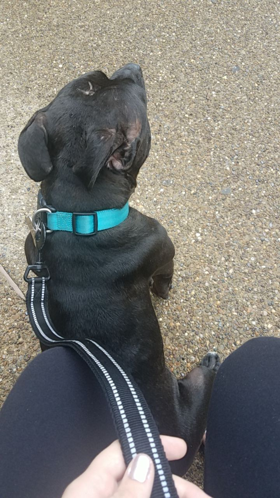
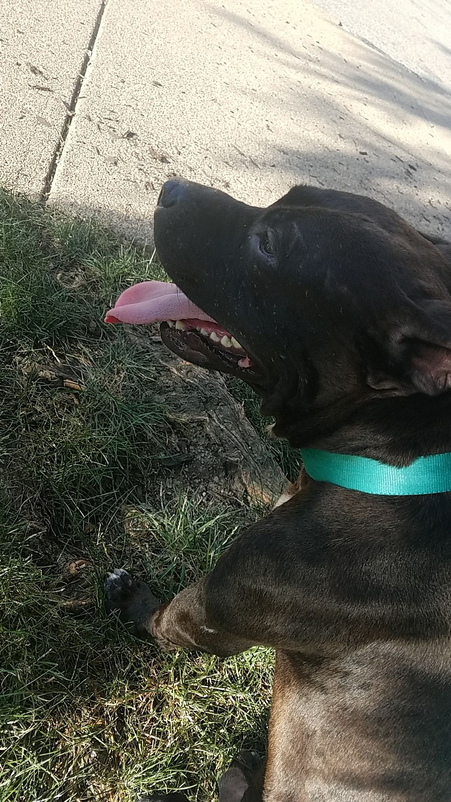

HOME
ABOUT
PROGRESS
RESOURCES

Emotional Support Animals
What is an
ESA
?
ESAs vs. Service Animals
Pros and Cons of ESAs
ESA Letter and Accommadations
ESA Scams

Reporting Animal Cruelty
What is Animal Cruelty?
Tips for Reporting Animal Cruelty
How to Report Animal Cruelty
PA Animal Cruelty Laws
PA Online Reporting